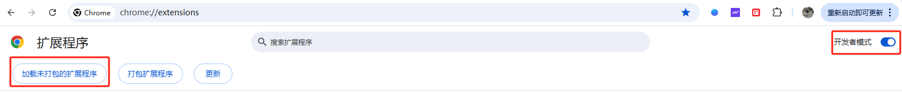
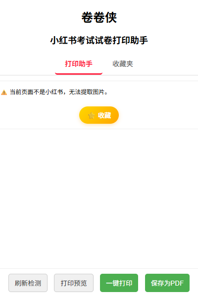

为什么需要小红书试卷提取打印工具？
在小红书上，许多教育博主分享了大量优质学校的考试试卷和答案， 但这些试卷往往是以图片形式发布，家长想要提取打印小红书试卷时十分麻烦， 需要一张张保存、排版、粘贴到 Word 后才能打印。
卷卷侠小红书试卷提取打印工具完美解决了这个痛点：它是一款专业的Chrome浏览器插件， 能自动提取识别小红书帖子中的试卷图片，支持批量提取、一键打印或保存为PDF， 让家长轻松完成小红书试卷提取打印，为孩子准备学习资料。
核心功能 - 小红书试卷提取打印一站式解决
- 📸 智能提取：自动识别并批量提取小红书帖子中的所有试卷图片
- 🖨️ 一键打印：提取后可直接打印，或保存为 PDF 文件便于分享
- ⭐ 收藏管理：支持收藏功能，建立个人小红书试卷资源库
- 📂 分类整理：可将提取的试卷分目录管理、快速跳转原帖
提示：当前插件尚未上架 Chrome 网上应用店，商店安装按钮已被禁用。你可以直接下载离线安装包并按照下面教程手动安装。
如何使用小红书试卷提取打印工具
📹 视频教程：快速了解如何提取打印小红书试卷
📝 小红书试卷提取打印详细步骤：
- 打开小红书网页版，进入含有试卷图片的帖子；
- 点击浏览器右上角的「卷卷侠」图标；
- 插件会自动提取识别所有试卷图片；
- 预览提取的试卷，可一键打印或保存为 PDF；
- 还可将提取的试卷收藏到「收藏夹」，方便下次查找打印。
离线安装 / 本地安装教程
如果无法直接通过 Chrome 网上应用店安装，可以下载我们提供的离线安装包并按以下步骤手动安装（适用于 Windows / macOS / Linux 的 Chrome 浏览器）：
- 点击上方"立即下载离线安装包"按钮，保存文件到本地（默认名：juanjuan.zip）。
- 将下载好的 ZIP 包解压到一个文件夹（例如：juanjuan-extension/）。
- 打开 Chrome 浏览器，输入 chrome://extensions 并回车，进入扩展程序页面；
- 右上角打开"开发者模式"（Developer mode 或 开发者模式）；
- 点击"加载未打包的扩展程序"（Load unpacked），然后选择第 2 步中解压得到的文件夹（juanjuan-extension/）；
- 等待 Chrome 加载扩展程序，加载完成后即可在浏览器工具栏看到卷卷侠图标并开始使用；

注意事项：
- 请确保解压后的文件夹中包含 manifest.json（即扩展的源文件）；
- Chrome 的安全策略可能会阻止一些功能，开发者模式仅用于手动安装和测试；
- 若要长期使用或自动更新，请优先通过 Chrome 网上应用店安装正式版（上架后我们会恢复商店安装入口）。
界面预览


作者的话
在孩子的学习过程中，我发现「刷卷子」能显著提升学习效率。 相比单题练习，卷子自带时间限制与情境感，能有效帮助孩子集中注意力， 同时方便家长监督进度。卷卷侠正是为此而生。
加入交流群
💬 欢迎加入卷卷侠官方 QQ 交流群，与其他家长一起交流学习资源、使用技巧
扫描二维码或搜索群号加入我们
常见问题 (FAQ)
- 问：如何获取并使用“卷卷侠”工具？
- 答：您可以通过本页面上方的“立即下载离线安装包”按钮获取插件，并根据安装教程在Chrome浏览器中进行安装，即可开始使用。
- 问：除了试卷，可以打印小红书上的其他笔记内容吗？
- 答：可以。虽然我们专注于小红书试卷的提取和打印，但该工具同样适用于提取和打印任何图文形式的笔记或学习资料。
- 问：为什么我需要一个专门的工具来打印小红书试卷？
- 答：因为小红书的图片无法直接复制或批量保存，手动截图再排版非常耗时。我们的工具可以一键完成所有提取和排版工作，大大提升了打印小红书试卷的效率。